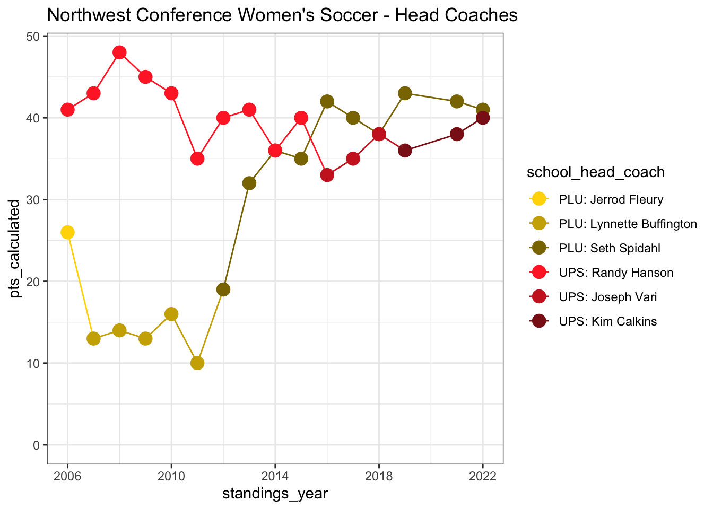

When I played for the Whitman College women’s soccer team from 2010-2013, Puget Sound dominated the Northwest Conference. However, when I checked the rankings today, Pacific Lutheran had beat out Puget Sound for the top position. I was curious to see how team standings had changed year-over-year.
During my career (2010-2013), Puget Sound won the league handily. However, while Puget Sound has continued to perform at the top of the league since then, Pacific Lutheran has had a dramatic improvement in performance and has secured first place since 2016*.
*Due to COVID, the 2020 season was postponed. Although it looks like some games may have been played in the spring of 2021, the standings weren’t reported on the official Northwest Conference site, as far as I can tell.
Click on a team in the legend to show/hide its data. Double click on a team to only show its data.
Pacific Lutheran’s meteoric rise in rankings coincides with the hiring of a new coach, Seth Spidahl. Puget Sound’s change in rankings doesn’t seem to coincide as cleanly with a single coach.

Pacific Lutheran has placed first in the Northwest Conference Women’s Soccer league for the last six years, displacing Puget Sound as the dominant team since I played. The hiring of a new coach at Pacific Lutheran coincides with this improvement in performance.
The women’s soccer standings are hosted on the Northwest Conference site. I scraped the standings for each year using rvest.
The head coaches for Pacific Lutheran up to 2021 was easily scraped. I manually curated the head coach for 2022.
Puget Sound was a bit more difficult, because I couldn’t find a well structured data source. I manually curated a list of coaches –